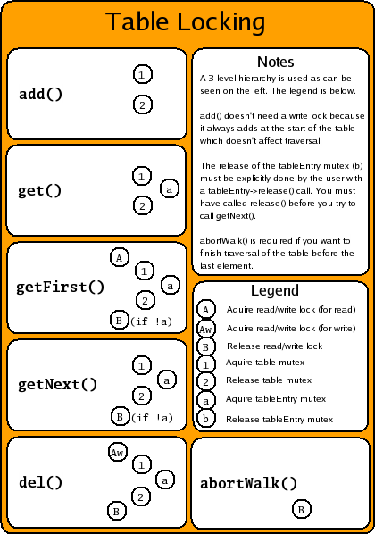
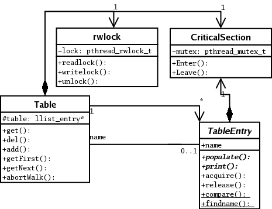

To compile the table example just do:
g++ -Wall -D_REENTRANT -lpthread PadThreads.cpp llist.c table.cpp table_test.cpp \ -o table_test
Note the locking provided by the table class is quite fine grained, allowing threads to traverse tables independently. The following diagram succinctly describes the locking implementation I think.

Note you still have to be aware of lock inversion. I.E. if you have more than 1 table, then threads must lock (acquire) items from the tables in the same order. For e.g...
Table table1, table2;
thread1() {
table1entry->acquire();
/* try to acquire table2entry */
}
thread2() {
table2entry->acquire();
/* try to acquire table1entry */
}
The deadlock is obvious here but usually much more subtle in real code. So across threads, don't invert the locking hierarchy.
The following is a UML diagram of the table implementation.
